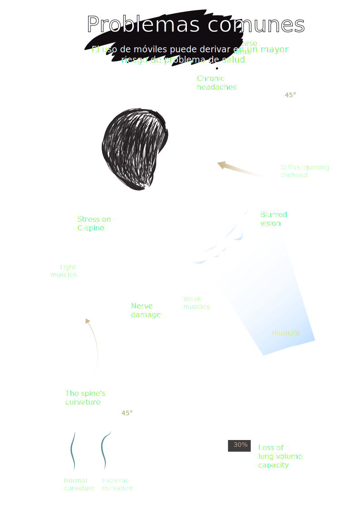

Eliana Jimenez
Mayo 24, 2021
La mayoría de nosotros nos encorvamos sobre nuestro smartphone durante al menos dos horas al día. Esto puede aumentar efectivamente el peso de tu cabeza hasta 27 kg, dañar tu postura y, si envías mensajes de texto mientras caminas, exponerte a todo tipo de accidentes.
Se espera que el número de usuarios de teléfonos móviles en todo el mundo supere los 5.000 millones este año. La penetración de la telefonía móvil seguirá creciendo hasta un 67%, con China a punto de contribuir con 1.500 millones de conexiones móviles y la India con 1.100 millones. El aumento del crecimiento del mercado de la telefonía móvil puede atribuirse sobre todo a la reducción del coste y la disponibilidad de los teléfonos inteligentes.

En general, los teléfonos móviles se consideran esenciales en nuestra vida cotidiana, y los mensajes de texto son la forma más común de comunicarse. La Groupe Spéciale Mobile Association (GSMA) estima que dos tercios de la población mundial poseen un teléfono móvil. En enero de 2018, al menos el 68% de la población mundial tenía acceso a un dispositivo. Se espera que esa cifra alcance el 75% en 2020.
Recomendación
Los especialistas de la columna vertebral sugieren mantener el teléfono a la altura de los ojos, hacer descansos regulares de los mensajes de texto y limitar el tiempo de pantalla para evitar el dolor. Hay aplicaciones que envían alertas cuando el usuario ha estado demasiado tiempo en una postura mirando hacia abajo.